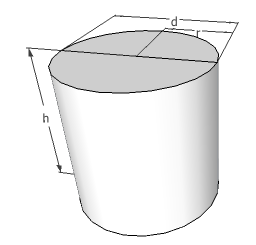

Fonksiyon ve Fonksiyonel Optimizasyonu, Lagrangian, Hamiltonian
Fonksiyonelden önce fonksiyon optimizasyonuna bakalım. Bu yazıda özellikle şartlı durumlar içeren optimizasyonlara bakacağız. Eğer elimizde bir bedel fonksiyonu var ise, bir diğer fonksiyonu Lagrange çarpanları yöntemi ile minimize edebiliriz.
Örnek
Bir depo üreticisi, silindir şeklinde ürettiği depoların eldeki sabit materyel ile maksimum hacim kapsayacak şekilde üretilmesini istiyor. Eğer materyelin (mesela demir olabilir) deponun her yerinde sabit kalınlıkta olacağını farz edersek, deponun ölçütleri ne olmalıdır? [1, sf. 42]

Çözüm
Aynı kalınlıkta materyel olacaksa, ve sabit materyel de olduğuna göre, depo dış alanının da sabit olması gereklidir. O zaman bu problem 'verili bir silindir dış alanına sahip en maksimal hacmi verecek depo boyutları nedir?' sorusuna dönüştü. Diyelim $d$ deponun çapı, $h$ yüksekliği. O zaman hacim
$$ V(d,h) = \pi d^2 h / 4 $$
Alan
$$ A(d,h) = 2 \pi d^2 / 4 + \pi d h = A_0 $$
$\pi d h$ nereden geldi? Bu silindirin yan taraflarını iki dikdörtgen olacak şekilde açabilirdik, bu dikdörtgenlerin bir kenarı $\pi r = \pi \cdot d/2$, yüksekliği $h$, onlardan iki tane var, toplam alan $\pi \cdot d/2 \cdot h \cdot 2 = \pi d h$. Alt ve üstte iki tane daire var zaten, her biri $\pi \left( \frac{d}{2} \right)^2$ iki tane $2 \pi d^2 / 4 $.
Amacımız $A(d,h) = A_0$ seviyesinde tutarken (bu bir kısıtlama, şart) $V(d,h)$'yi maksimize etmek.
Lagrange çarpanlarıyla bu işi yapabiliriz, hem ana fonksiyonu hem de şartları birleştirip yeni bir genişleştirilmiş fonksiyon yaratırız, ve bu yeni fonksiyonun ekstrem noktasını klasik yöntemle buluruz, tüm değişkenleri üzerinden kısmı türevlerini alıp sıfıra eşitleriz, ve tüm bu denklem sistemini çözeriz.
Maksimize edilecek hacim formülünü
$$ f(d,h) = \pi d^2 h / 4 $$
olarak yazalım, tatmin edilecek kısıtlamayı
$$ g(d,h) = 2 \pi d^2 / 4 + \pi d h - A_0 = 0 $$
Şimdi Lagrangian adı verilen yeni bir birleşmiş fonksiyon
$$ \mathcal{L}(d,h,\lambda) = f(d,h) + \lambda g(d,h) $$
$$ = \pi d^2 h / 4 + \lambda (2 \pi d^2 / 4 + \pi d h - A_0 ) $$
yaratılır, ki Lagrange çarpanı denilen $\lambda$ daha bilinmiyor. Lagrangian $\mathcal{L}$ üç değişkenin fonksiyonu olduğuna göre $\mathcal{L}$'in bu üç değişkene göre kısmi türevini alıp sıfıra eşitlemek gerekiyor.
$$ \frac{\partial \mathcal{L}}{\partial d} = \pi d h / 2 + \lambda (\pi d + \pi h) = 0 $$
$$ \frac{\partial \mathcal{L}}{\partial h} = \pi d^2 / 4 + \lambda (\pi d) = 0 $$
$$ \frac{\partial \mathcal{L}}{\partial \lambda} = 2\pi d^2 / 4 + \pi d h - A_0 = 0 $$
Üstteki üç denklemi çözünce
$$ d^\ast = \sqrt{\frac{2 A_0}{3 \pi}}, \quad h^\ast = \sqrt{\frac{2 A_0}{3 \pi}}, \quad \lambda^\ast = -\sqrt{\frac{A_0}{24 \pi}} $$
Bu sonuçlar diyor ki silindirsel deponun hacmini maksimize etmek için onun çapını ve yüksekliğini aynı tutmalıyız.
Hamiltonian Biçimi
Daha önce Lagrangian biçimini gördük, $x=x(t)$, $u=u(t)$, $\dot{x}=\dot{x}(t)$, $\lambda=\lambda(t)$ olmak üzere, sistem denklemi
$$ \dot{x} = f(x, u, t) $$
idi, sınır şartları $x(t_0)$ sabit, $x(t_f)$ serbest bırakılmış. Performans ölçütü bizim tanımlayabileceğimiz bir $V$ üzerinden basit haliyle şöyleydi,
$$ J(u) = \int_{t_0}^{t_f} V(x, u, t) \mathrm{d} t $$
Sınır şartı $g$ sistem denklemi üzerinden,
$$ g(x, \dot{x}, u, t) = f(x, u, t) - \dot{x} = 0 $$
Lagrangian'i oluşturalım ($g$ burada),
$$ \mathcal{L} = \mathcal{L}( x, \dot{x}, u, \lambda, t) = V( x, u, t) + \lambda^T g $$
$$ = V(x, u, t) + \lambda^T \big\{ f(x, u, t) - \dot{x} \big\} \qquad (4) $$
Performans ölçütü şimdi şöyle oldu,
$$ J_a(u) = \int_{t_0}^{t_f} \mathcal{L}( x, \dot{x}, u, \lambda, t) $$
Eğer Hamiltonian biçimine geçmek istiyorsak, bir $\mathcal{H}$ tanımlarız,
$$ \mathcal{H}(x, u, \lambda, t) = V( x, u, t) + \lambda^T f(x, u, t) $$
o zaman Lagrangian $\mathcal{H}$ formu da şu hale gelir,
$$ \mathcal{L}( x, \dot{x}, u, \lambda, t) = \mathcal{H}(x, u, \lambda, t) - \lambda^T \dot{x} \qquad (5) $$
Bu aslında (4)'ün açılmış hali, ve o ilk bölümün $\mathcal{H}$ olarak tanımlanması,
$$ \mathcal{L} = \underbrace{V( x, u, t) + \lambda^T f( x, u, t))}_{\mathcal{H}} - \lambda^T \dot{x}(t) $$
Şimdi Euler-Lagrange işlemini hatırlayalım, eldeki değişkenler $x,\lambda,u$ üzerinden bu denklemler
$$ \left( \frac{\partial \mathcal{L}}{\partial x} \right) - \frac{\mathrm{d}}{dt} \left( \frac{\partial \mathcal{L}}{\partial \dot{x}} \right) = 0 \quad \textrm{konum (state) denklemi} $$
$$ \left( \frac{\partial \mathcal{L}}{\partial \lambda} \right) - \frac{\mathrm{d}}{dt} \left( \frac{\partial \mathcal{L}}{\partial \dot{\lambda}} \right) = 0 \quad \textrm{eşkonum (costate) denklemi} $$
$$ \left( \frac{\partial \mathcal{L}}{\partial u} \right) - \frac{\mathrm{d}}{dt} \left( \frac{\partial \mathcal{L}}{\partial \dot{u}} \right) = 0 \quad \textrm{kontrol (control) denklemi} $$
Üstte belirtildiği gibi bu denklemlere konum, eşkonum, kontrol denklemleri ismi veriliyor. Şimdi biz bu türetmeyi içinde $\mathcal{H}$ olan $\mathcal{L}$ için yapacağız, çünkü bu şekilde belli daha uygun formlar elde etmek istiyoruz, yani (4) denklemini baz alarak, üstteki üç formülü uygulayınca,
$$ \frac{\partial \mathcal{L}}{\partial x} = \frac{\partial \mathcal{H}}{\partial x} - \frac{\mathrm{d}}{\mathrm{d} t} \left( -\lambda \right) = 0 $$
$$ \frac{\partial \mathcal{L}}{\partial \lambda} = \frac{\partial \mathcal{H}}{\partial \lambda} - \dot{x} - \frac{\mathrm{d}}{\mathrm{d} t} \left( 0 \right) = 0 $$
$$ \frac{\partial \mathcal{L}}{\partial u} = \frac{\partial \mathcal{H}}{\partial u} - \frac{\mathrm{d}}{\mathrm{d} t} \left( 0 \right) = 0 $$
Ve bu türetme üzerinden konum, eşkonum, kontrol denklemlerinin yeniden düzenlenmiş hali şöyle olur,
$$ \dot{x} = + \left( \frac{\partial \mathcal{H}}{\partial \lambda} \right) $$
$$ \dot{\lambda} = - \left( \frac{\partial \mathcal{H}}{\partial x} \right) $$
$$ 0 = + \left( \frac{\partial \mathcal{H}}{\partial u} \right) $$
Üstteki son denklem Hamiltonian $\mathcal{H}$'nin kontrol $u$'ya göre nasıl optimize edileceğini gösteriyor. Yani $J$ fonksiyonelin sistem denklemine göre optimize edilmesi problemi şimdi Hamiltonian fonksiyonunun $u$ bazında optimize edilmesi problemine dönüştü. Böylece orijinal fonksiyonel optimizasyonunu normal bir fonksiyon optimizasyon problemine indirgemiş olduk [1, sf. 86].
Örnek [1, sf. 70]
Çift entegre edici (double-integrator) sistemine bakalım.
$$ \dot{x}_1(t) = x_2(t) $$
$$ \dot{x}_2(t) = u(t) $$
Performans ölçütü
$$ J = \frac{1}{2} \int_{t_0}^{t_f} u^2 \mathrm{d} t $$
Yani $u(t)$'nin, tüm değerlerinin, ortalama olarak fazla büyük olmasını istemiyoruz. Sınır şartları $\underline{x} = \left[\begin{array}{cc} x_1 & x_2 \end{array}\right]^T$ olmak üzere,
$$ \underline{x}(0) = \left[\begin{array}{cc} 1 & 2 \end{array}\right]^T \quad \underline{x}(2) = \left[\begin{array}{cc} 1 & 0 \end{array}\right]^T $$
Yazının geri kalanında $\underline{x}$, vs. kullanılmayacak, çerçeveden boyut tahmin edilebilir.
Çözüm
Hamiltonian'ı oluşturalım çünkü tüm sonuç türevleri ona göre alınıyor artık; o zaman $V,\lambda,f$ gerekiyor.
$$ V(x,u,t) = V(u) = \frac{1}{2} u^2 $$
$$ f(x,u,t) = \left[\begin{array}{cc} f_1 & f_2 \end{array}\right]^T $$
oyle ki $f_1 = x_2(t)$, $f_2 = u(t)$.
Hamiltonian
$$ \mathcal{H} = \mathcal{H}(x_1, x_2, u, \lambda_1, \lambda_2) $$
$$ = V(u) + \lambda^T f(x,u) $$
$$ = \frac{1}{2} u^2 + \lambda_1 x_2 + \lambda_2 u $$
Optimal $u^\ast$'yu bulmak için $\frac{\partial \mathcal{H}}{\partial u}$ denklemini kullanıyoruz,
$$ \left( \frac{\partial \mathcal{H}}{\partial u} \right) = 0 \to u^\ast + \lambda_2^\ast = 0 $$
$$ u^\ast = -\lambda_2^\ast $$
Optimal $\mathcal{H}$'yi bulmak için üstteki değerleri üç üstteki formüle sokuyoruz,
$$ \mathcal{H}^\ast(x_1^\ast, x_2^\ast,\lambda_1^\ast,\lambda_2^\ast) = \frac{1}{2} \lambda_2^\ast + \lambda_1^\ast x_2^\ast - \lambda_2^\ast $$
$$
= \lambda_1^\ast x_2^\ast - \frac{1}{2} {\lambda_2^\ast}^2
$$
Devam edersek, $\dot{x} = \left( \frac{\partial \mathcal{H}}{\partial \lambda} \right)$ denkleminden hareketle,
$$ \dot{x}^\ast_1 = \left( \frac{\partial \mathcal{H}}{\partial \lambda_1} \right) = x_2^\ast $$
$$ \dot{x}^\ast_2 = \left( \frac{\partial \mathcal{H}}{\partial \lambda_2} \right) = \lambda_2^\ast $$
Ve $\dot{\lambda} = - \left( \frac{\partial \mathcal{H}}{\partial x} \right)$ denkleminden hareketle,
$$ \dot{\lambda}_1^\ast = - \left( \frac{\partial \mathcal{H}}{\partial x_1} \right) = 0 $$
$$ \dot{\lambda}_2^\ast = - \left( \frac{\partial \mathcal{H}}{\partial x_2} \right) = - \lambda_1^\ast $$
from sympy import symbols, Eq, Function, dsolve, latex, simplify
t = symbols('t')
x1,x2,lam1,lam2 = symbols('x1 x2 lam1 lam2',cls=Function)
system = [Eq(x1(t).diff(t), x2(t)), \
Eq(x2(t).diff(t), -lam2(t)), \
Eq(lam1(t).diff(t), 0), \
Eq(lam2(t).diff(t), -lam1(t)), \
]
sol = dsolve(system, [x1(t),x2(t),lam1(t),lam2(t)])
print (latex(simplify(sol[0])))
print (latex(simplify(sol[1])))
print (latex(sol[2]))
print (latex(sol[3]))
x_{1}{\left(t \right)} = C_{1} + C_{2} t + C_{2} + \frac{C_{3} t^{2}}{2} + C_{3} t + C_{3} + \frac{C_{4} t^{3}}{6} + \frac{C_{4} t^{2}}{2} + C_{4} t + C_{4}
x_{2}{\left(t \right)} = C_{2} + C_{3} t + C_{3} + \frac{C_{4} t^{2}}{2} + C_{4} t + C_{4}
lam_{1}{\left(t \right)} = C_{4}
lam_{2}{\left(t \right)} = - C_{3} - C_{4} t - C_{4}
$$ x_{1}{\left(t \right)} = C_{1} + C_{2} t + C_{2} + \frac{C_{3} t^{2}}{2} + C_{3} t + C_{3} + \frac{C_{4} t^{3}}{6} + \frac{C_{4} t^{2}}{2} + C_{4} t + C_{4} $$
$$ x_{2}{\left(t \right)} = C_{2} + C_{3} t + C_{3} + \frac{C_{4} t^{2}}{2} + C_{4} t + C_{4} $$
$$ lam_{1}{\left(t \right)} = C_{4} $$
$$ lam_{2}{\left(t \right)} = - C_{3} - C_{4} t - C_{4} $$
Sınır şartlarını tanımlayarak çözersek, ve sadece $\lambda_2$'ye bakarsak (çünkü $u(t)$ sonucunu $u(t) = -\lambda_2^\ast (t)$ olarak bulmuştuk),
ics = { x1(0):1, x2(0):2, x1(2):1, x2(2):0 }
sol = dsolve(system, [x1(t),x2(t),lam1(t),lam2(t)], ics=ics)
print (latex(sol[3]))
lam_{2}{\left(t \right) = 4 - 3 t
$$ \lambda_{2}{\left(t \right)} = 4 - 3 t $$
O zaman,
$$ u = -\lambda_2 = 3t - 4 $$
Ozetlemek gerekirse, aynen bir bedel üzerinden fonksiyon optimize ettiğimiz gibi, bir fonksiyonel bedel üzerinden bir optimal fonsiyon da bulabiliriz. Lagrange çarpanları yöntemi hala geçerli, bir birleşmiş fonksiyonel yaratıyoruz, ve Euler-Lagrange üzerinden bu yeni fonksiyonelin alt denklemlerini çıkartıyoruz, ve sonra bu diferansiyel sistemini çözüyoruz.
İki değişken üzerinden bakalım, şu fonksiyonel olsun [1, sf. 48],
$$ J(x_1(t),x_2(t),t) = J = \int_{t_0}^{t_1} V(x_1(t), x_2(t), \dot{x}_1(t), \dot{x}_2(t), t) \mathrm{d} t $$
kısıtlama şartı (kontrol teorisindeki sistem denklemi buraya geliyor)
$$ g(x_1(t), x_2(t), \dot{x}_1(t), \dot{x}_2(t)) = 0 $$
ve şu sabit uç noktaları geçerli olacak şekilde,
$$ x_1(t_0) = x_{10}, \quad x_2(t_0) = x_{20} $$
$$ x_1(t_f) = x_{1f}, \quad x_2(t_f) = x_{2f} $$
Euler-Lagrange
$$ \left( \frac{\partial \mathcal{L}}{\partial x_1} \right) - \frac{\mathrm{d}}{dt} \left( \frac{\partial \mathcal{L}}{\partial \dot{x}_1} \right) = 0 $$
$$ \left( \frac{\partial \mathcal{L}}{\partial x_2} \right) - \frac{\mathrm{d}}{dt} \left( \frac{\partial \mathcal{L}}{\partial \dot{x}_2} \right) = 0 $$
$$ \left( \frac{\partial \mathcal{L}}{\partial \lambda} \right) - \frac{\mathrm{d}}{dt} \left( \frac{\partial \mathcal{L}}{\partial \dot{\lambda}} \right) = 0 $$
Örnek
Performans değerini
$$ J = \int_{0}^{1} \left[ x^2(t) + u^2(t) \right] \mathrm{d} t $$
optimize edin ki uç noktalar
$$ x(0) = 1, \quad x(1) = 0 $$
ve kısıtlama (sistem denklemi)
$$ \dot{x}(t) = -x(t) + u(t) $$
olacak şekilde.
Çözüm
İlk önce sistem denklemini $g$ formunda yazalım,
$$ g( x(t), \dot{x}(t), u(t) ) = \dot{x}(t) + x(t) - u(t) = 0 $$
Lagrange çarpanlar yöntemi ile birleşik fonksiyoneli yaratalım,
$$ J = \int_{0}^{1} \left[ x^2(t) + u^2(t) + \lambda(t) \left\{ \dot{x}(t) + x(t) - u(t) \right\} \right] \mathrm{d} t $$
$$ = \int_{0}^{1} \mathcal{L} (x(t), \dot{x}(t),u(t),\lambda(t)) \mathrm{d} t $$
Şimdi üstteki Lagrangian üzerinde Euler-Lagrange formülünü uygulayalım,
$$ \left( \frac{\partial \mathcal{L}}{\partial x_1} \right) - \frac{\mathrm{d}}{dt} \left( \frac{\partial \mathcal{L}}{\partial \dot{x}_1} \right) = 0 \to 2 x(t) + \lambda(t) - \dot{\lambda}(t) = 0 \qquad (1) $$
$$ \left( \frac{\partial \mathcal{L}}{\partial u} \right) - \frac{\mathrm{d}}{dt} \left( \frac{\partial \mathcal{L}}{\partial \dot{u}} \right) = 0 \to 2u(t) - \lambda(t) = 0 \qquad (2) $$
$$ \left( \frac{\partial \mathcal{L}}{\partial \lambda} \right) - \frac{\mathrm{d}}{dt} \left( \frac{\partial \mathcal{L}}{\partial \dot{\lambda}} \right) = 0 \to \dot{x}(t) + x(t) - u(t) = 0 \qquad (3) $$
(2) ve (3) formüllerini birleştirince,
$$ \lambda(t) = 2 u(t) = 2 (\dot{x}(t) + x(t) ) $$
Sonra (1) formülünü dahil edelim,
$$ 2 x(t) + 2 (\dot{x}(t) + x(t)) - 2(\ddot{x}(t) + \dot{x}(t) ) = 0 $$
Basitleştirirsek,
$$ \ddot{x}(t) - 2x(t) = 0 $$
Çözelim,
import sympy
t = sympy.symbols('t')
x = sympy.Function('x')
diffeq = sympy.Eq(x(t).diff(t, t) - 2*x(t),0)
print (sympy.latex (sympy.dsolve(diffeq, x(t))))
x{\left(t \right)} = C_{1} e^{- \sqrt{2} t} + C_{2} e^{\sqrt{2} t}
$$ x{\left(t \right)} = C_{1} e^{- \sqrt{2} t} + C_{2} e^{\sqrt{2} t} $$
Eğer başlangıç ve bitiş şartlarını verirsek,
diffeq = sympy.Eq(x(t).diff(t, t) - 2*x(t),0)
solved = sympy.dsolve(diffeq, x(t), ics={x(0):1,x(1):0 } )
solved = sympy.simplify(solved)
print (sympy.latex (solved))
x{\left(t \right)} = \frac{\left(e^{2 \sqrt{2} t} - e^{2 \sqrt{2}}\right) e^{- \sqrt{2} t}}{1 - e^{2 \sqrt{2}}}
$$ x{\left(t \right)} = \frac{\left(e^{2 \sqrt{2} t} - e^{2 \sqrt{2}}\right) e^{- \sqrt{2} t}}{1 - e^{2 \sqrt{2}}} $$
Ve $u$ için [1]'e bakarsak,
$$ u(t) = \dot{x}(t) + x(t) $$
olduğu için
$$ u(t) = C_1(1-\sqrt{2}) e^{-\sqrt{2t}} + C_2(1-\sqrt{2}) e^{\sqrt{2t}} $$
ki $C_1 = 1/(1-e^{-2\sqrt{2}})$ ve $C_2 = 1/(1-e^{2\sqrt{2}})$
Böylece tanımladığımız bedeli optimize edecek bir kontrol aksiyonu $u$ ve $x$ elde etmiş olduk.
Kaynaklar
[1] Naidu, Optimal Control Systems